Family workshop
Vehicle / welding / electronics / controlled silliness
Drift Trike
Electric drift trike. Fabrication, motor mounts, controller wiring. It has to make a child grin while going sideways.
Steel, wheels, motors, wiring. Has to survive an enthusiastic child, not a bench demo. Several things I was confident about turned out wrong.

- Frame
- —
- Motor and drive
- —
- Controller and battery
- —
- Wheels and tyres
- —
- Build time
- —
- Cost
- —
What went wrong
To be written up.
What I would change
To be written up.
Payoff
The acceptance test
Spec was: go, turn, slide, make him grin. Here is where I found out.
Learning
Tapping a thread
First signs of life
Motor electronics on the bench
Motor, chain, controller, wiring and display, run together on the bench before any of it goes near a rider. Cheap place to find out a connector is undersized.
Wiring
Making up the high-current wiring
Controls
Bench-testing the control box
Green welding
What the welder actually sees
Shot through the auto-darkening filter - the only way to see arc, puddle and filler rod at once. Puddle size, travel speed, how far ahead of the bead you look. All of it is in here.
First pass
Seen through the filter
Close bead
A tighter, slower pass
Another pass
Small, hot, slightly hypnotic.
Wide welding
Welding, wider shot
Plasma cutting
Cutting the frame
Motor mount
The unglamorous bit that decides whether it works.
The motor mount decides whether any of the rest works. Alignment, chain tension, clearance, fastener access, and how you service it after the first failure. All settled before anything gets welded.
Drilling
Slow motion swarf therapy.
Belt sander
Deburring the bracket edges
Detail
Clean holes for the mount bolts
Drive end
Motor and axle assembly
Assembly
Putting it together
Walkaround
The finished machine, before it gets muddy
Parts
Unboxing the useful bits
Layout
Frame on the table
Tiny camera
A very mechanical point of view
Testing
Another run across the grass
Systems
Small vehicle, full stack
Small machine, same thinking as a big one. Structure, drivetrain, wiring, controls, packaging. All of it has to survive vibration.
Fabrication
Order of operations
Cut, drill, weld, tap, mount - in an order you can still recover from. Weld too early and you lose the adjustment. Leave it too late and you are welding around finished parts.
Electronics
The electronics are half the build
Controller and wiring took about as long as the frame. Vibration, chafe and connector choice decide whether it still works on the tenth run.
Success
Measured in sideways motion.
Child on the grass going sideways, the only outcome I really care about.

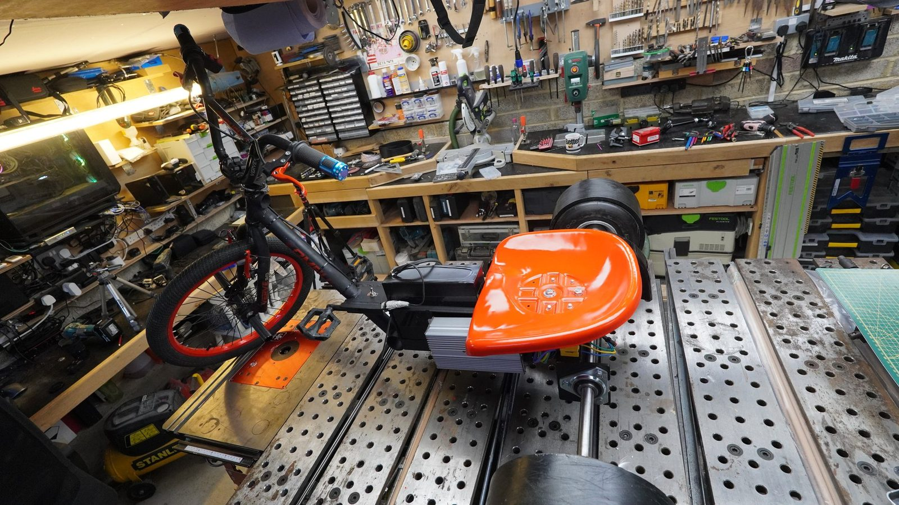

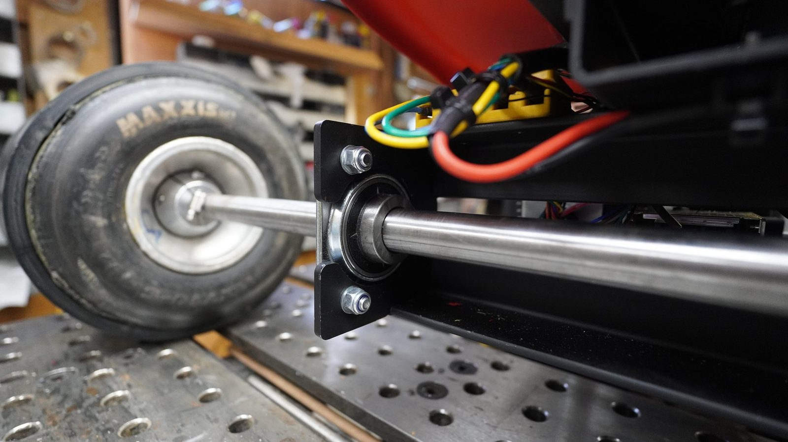


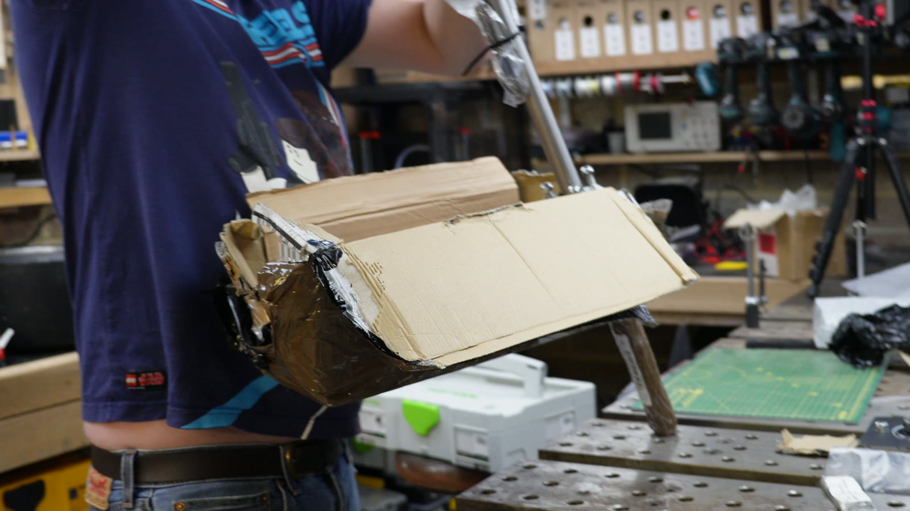
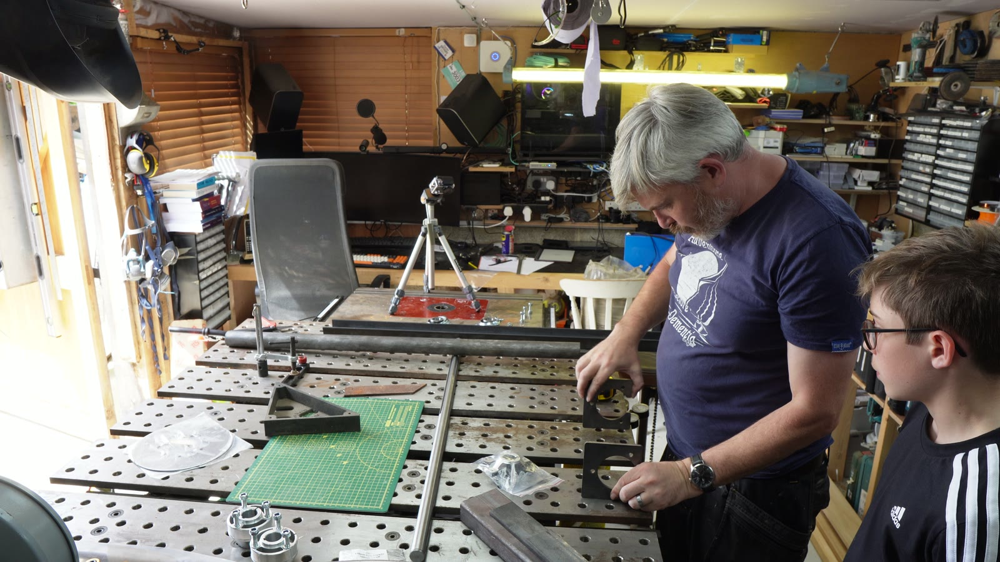
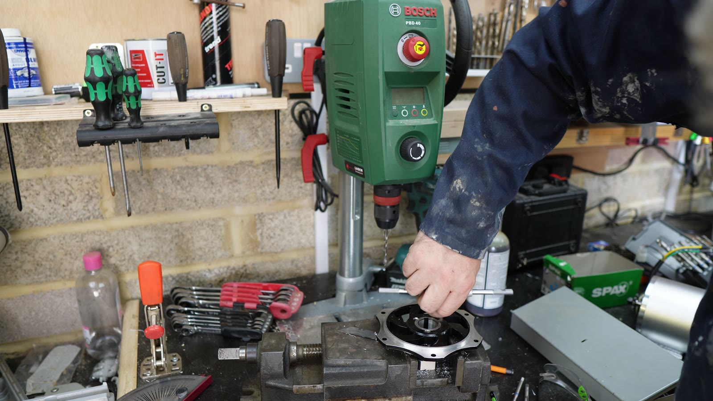
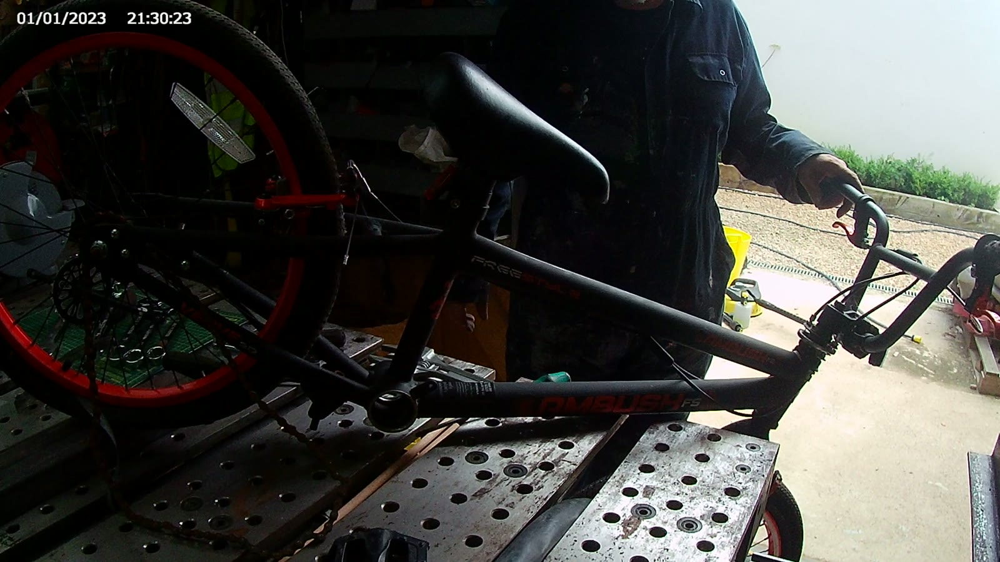
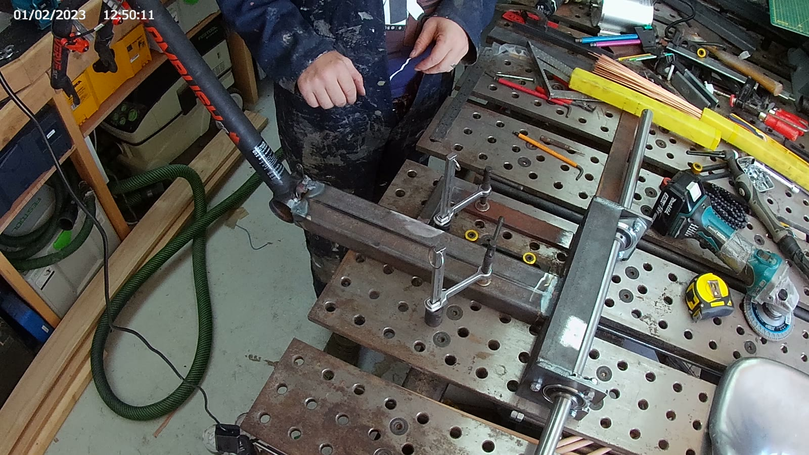
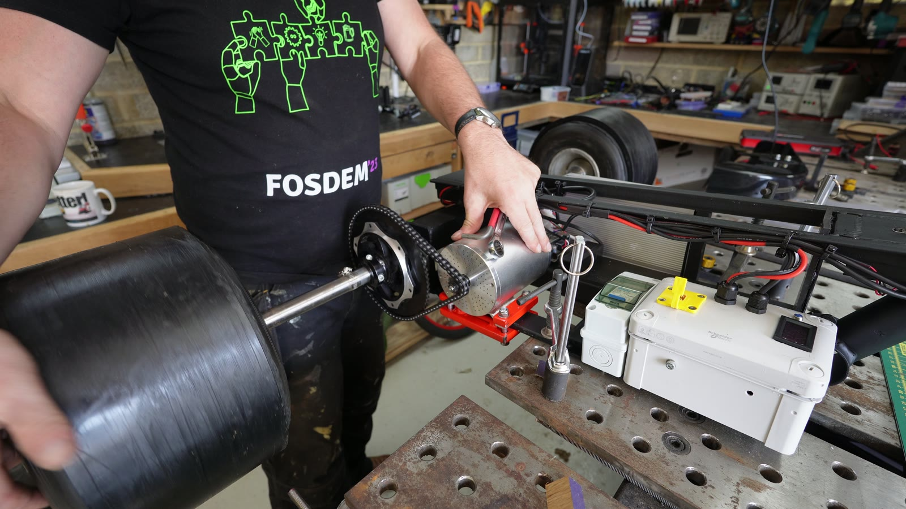


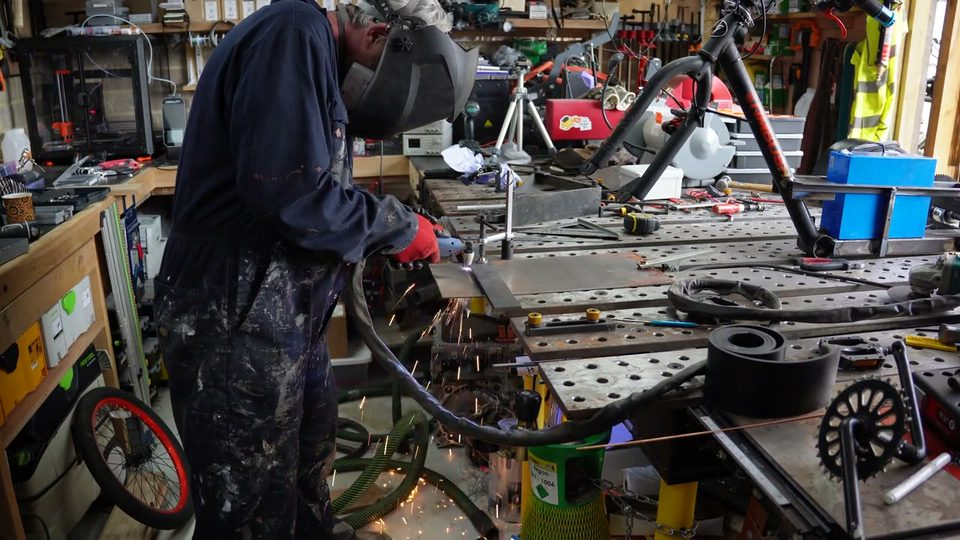
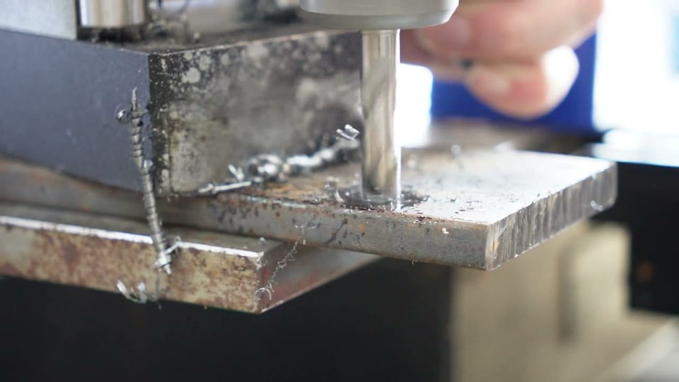
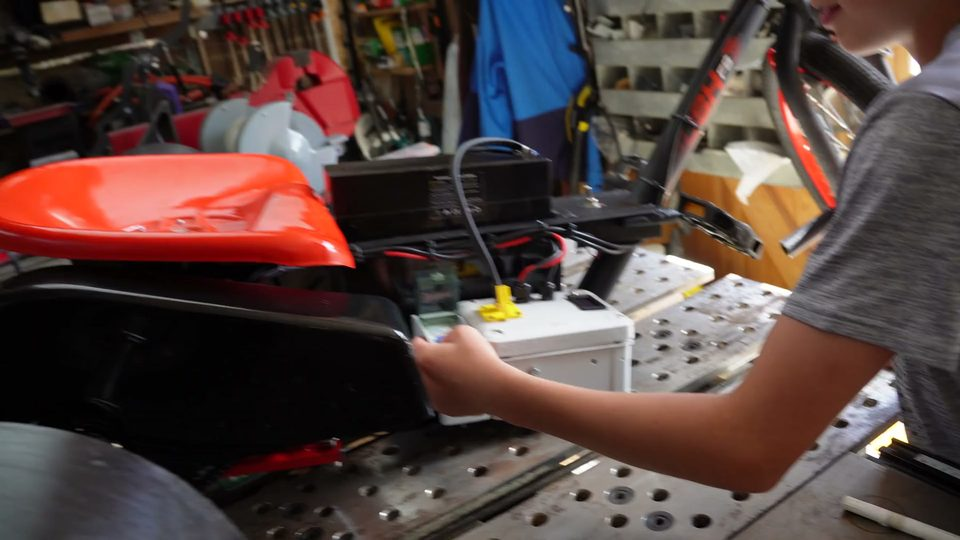
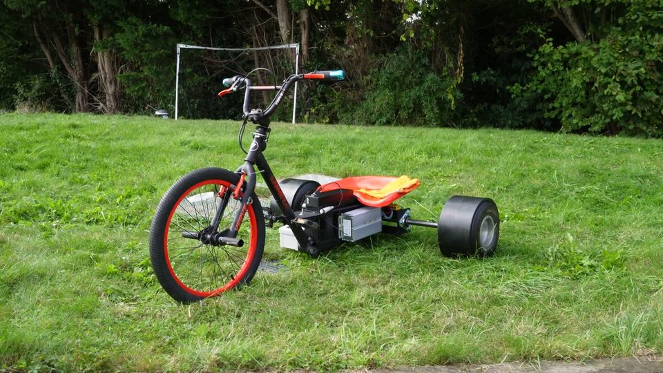